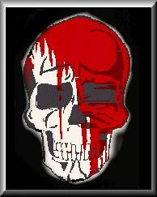

Forums galactiques > Assemblée Galactique : diplomatie officielle > Avertissement anonyme...
Pages : 1
| OQVVDB Respect diplomatique : 3  15/05 ETU 22:16 | Score : 3 Détails ***** Communiqué de provenance inconnue. Codé prioritaire *****
« Devant le coup d’Etat perpétré par les Héritiers de l’Histoire, qui imposent une nouvelle fois un modèle économique sans demander l’avis des commandants qui peuplent cette galaxie, il nous parait nécessaire de mettre en garde l’ensemble des commerçants qui choisiront de faire confiance à la nouvelle contrebande héritière. Nous souhaitons appeler ces commandants à consulter les archives historiques de la galaxie Origine. L’Histoire a déjà montré auparavant que les Héritiers n’ont jamais hésité à manipuler l’opinion pour parvenir à leur fin secrète. Nous souhaitons en outre prophétiser la faiblesse des héritiers en ce qui concerne la sécurisation de leurs transactions commerciales par le biais d’une contrebande encore hasardeuse. Par les temps qui courent, il pourrait être dangereux de vendre quoi que ce soit aux Héritiers. Une organisation amie qui vous veut du bien. » | ||
| Eloa Respect diplomatique : 17  15/05 ETU 22:41 | Score : 2 Détails Communiqué en provenance des centrales commerciales des Héritiers de l'Histoire.
"Nous ne prendrons même pas la peine de répondre à cette organisation anonyme qui n'est autre qu'une portion de l'Organisation Renégate, qui souhaite sans doute conserver sa visibilité dans cette galaxie. En revanche, nous souhaitons vous informer de l'ouverture prochaine de la contrebande du projet équilibre. Dans quelques instants, le nouveau marché sera accessible. Commercialement vôtre. Les Héritiers." | ||
| nobunaga Respect diplomatique : 17  16/05 ETU 03:59 | Score : 0 Détails Communiqué du Daimyo
Si vous nous jugez apte d'y participer,c'est avec un grand honneur que nous rejoindrons ce nouveau marché. Le commerce,créateur de richesse, a toujours été très utile à mon peuple dépourvu de matières premières. | ||
| Kahndann Respect diplomatique : 116  17/05 ETU 20:23 | Score : 3 Détails *L'hologramme grésille brièvement avant de se stabiliser. Un homme petit, aux cheveux argentés apparait. Il semble irrité. Maldim, présent à ses côtés, prend le premier la parole*
Commandants, Salutations. Vous me connaissez tous, et savez que je parle au nom de la G.H.T., SDDL. La Compagnie a une déclaration à faire. Je vais laisser le Sieur Daharn prendre la parole. *Il se recule légèrement. L'homme, Daharn, s'avance. Il y'a quelque chose de martial dans sa posture* Commandants ! Une fois de plus, des convois de la G.H.T. ont été attaqués. Mais il y'a plus. A bord du convoi attaqué se trouvait un navire espion, qui a pu nous ramené des images des assaillants. Commandants, chaque vaisseau lancé dans l'attaque portait en proue un logo à vous glacer le sang, constitué d'un crâne sanglant. Il suffit ! Ceci ne fait que confirmer nos soupcons ! Commandants, la Compagnie accuse l'OQVVDB de piratage et d'actes de barbarie ! J'annonce officiellement que la Compagnie offre une récompense non négligeable pour toute information concernant ces pirates. J'annonce officiellement que la Compagnie considérera comme ennemis tout commandants traitant avec eux. Enfin, j'annonce que la Compagnie offre une récompense dépassant vos rêves les plus fous contre le dirigeant de cette organisation, vivant si possible. Mais ceci n'est pas une obligation... Commandants, personne n'entravera la libre circulation des marchandises tant que la G.H.T. sera ! *L'hologramme se coupe brusquement* |
Pages : 1
Forums galactiques > Assemblée Galactique : diplomatie officielle > Avertissement anonyme...